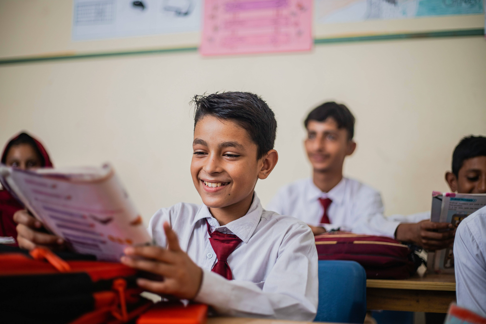

Oficina de Programação
Ensinamos lógica e as primeiras linhas de código de forma lúdica e divertida.
Capacitamos crianças e jovens de comunidades para se tornarem os criadores do futuro digital.
Conheça Nossos ProjetosA KidsTech acredita no poder da educação tecnológica como ferramenta de transformação social. Desde 2020, já impactamos a vida de centenas de jovens no Rio de Janeiro, oferecendo cursos de programação, robótica e pensamento computacional de forma gratuita e acessível.
Ensinamos lógica e as primeiras linhas de código de forma lúdica e divertida.
Os alunos projetam, montam e programam seus próprios robôs, estimulando a criatividade.
Ficou com alguma dúvida ou quer saber mais sobre parcerias? Fale conosco!
E-mail: contato@kidstech.org
Telefone: (21) 99999-8888
Endereço: Av. Principal, 123, Rio de Janeiro - RJ, Brasil